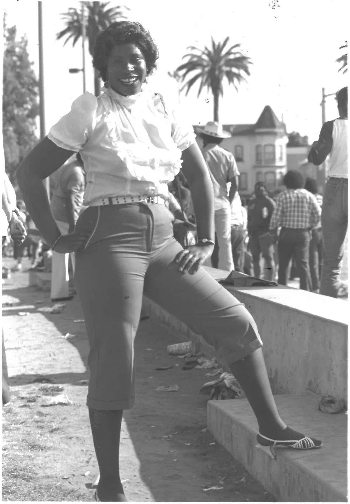

Date and location under research
Environmental
People and the places of everyday life.
Portraiture
Photographs of people in the environments of daily and community life.
The photographs
People converse, sit together, and pose outdoors. The surrounding buildings and gathering places remain visible alongside the subjects. Individual dates, locations, and identities have not been established.
Browse the photographs

Date and location under research
People and the places of everyday life.